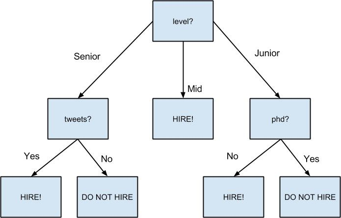

17.4 创建决策树
副总为你提供了应聘者的相关资料，包括符合你的数据规范的 (input, label) 对，其中每个输入都是由应聘者的各种属性构成的一个字典变量，而每个标签的取值要么为 True （该求职者面试成绩很好），要么为 False （该求职者面试成绩很差）。具体来说，数据为你提供了每个求职者的得分情况、常用语言、在 Twitter 上的活跃程度以及是否拥有博士学位等信息：
inputs = [
({'level':'Senior', 'lang':'Java', 'tweets':'no', 'phd':'no'}, False),
({'level':'Senior', 'lang':'Java', 'tweets':'no', 'phd':'yes'}, False),
({'level':'Mid', 'lang':'Python', 'tweets':'no', 'phd':'no'}, True),
({'level':'Junior', 'lang':'Python', 'tweets':'no', 'phd':'no'}, True),
({'level':'Junior', 'lang':'R', 'tweets':'yes', 'phd':'no'}, True),
({'level':'Junior', 'lang':'R', 'tweets':'yes', 'phd':'yes'}, False),
({'level':'Mid', 'lang':'R', 'tweets':'yes', 'phd':'yes'}, True),
({'level':'Senior', 'lang':'Python', 'tweets':'no', 'phd':'no'}, False),
({'level':'Senior', 'lang':'R', 'tweets':'yes', 'phd':'no'}, True),
({'level':'Junior', 'lang':'Python', 'tweets':'yes', 'phd':'no'}, True),
({'level':'Senior', 'lang':'Python', 'tweets':'yes', 'phd':'yes'}, True),
({'level':'Mid', 'lang':'Python', 'tweets':'no', 'phd':'yes'}, True),
({'level':'Mid', 'lang':'Java', 'tweets':'yes', 'phd':'no'}, True),
({'level':'Junior', 'lang':'Python', 'tweets':'no', 'phd':'yes'}, False)
]
我们的决策树含有许多决策节点 （该节点会提出一个问题，并根据问题的答案来指导我们下一步如何走）和叶节点 （该节点为我们提供预测结果）。我们将使用较为简单的 ID3 算法来创建决策树，具体过程将在下面详细介绍。假设我们得到了一些标记过的数据，以及一个用来选择下一个分支的属性列表。
如果所有数据都有相同的标签，那么创建一个预测最终结果即为该标签所示的叶节点，然后停止。
如果属性列表是空的（即已经没有更多的问题可提问了），就创建一个预测结果为最常见的标签的叶节点，然后停止。
否则，尝试用每个属性对数据进行划分。
选择具有最低划分熵的那次划分的结果。
根据选定的属性添加一个决策节点。
针对划分得到的每个子集，利用剩余属性重复上述过程。
这就是所谓的“贪婪”算法，因为在每一步，它都会选择最快最好的那一个。对于特定的数据集，有的决策树在开头几步看起来表现不佳，但最终结果却可能是最棒的。如果是这样的话，这个算法就无法找到这样的决策树。尽管如此，它也有自己的优点，即相对来说还是很容易理解和实现的，所以，把它用作探索决策树的起点还是非常不错的。
下面让我们以手动方式在应聘者数据集上完成这些步骤。这个数据集具有 True 和 False 两种标签，我们将利用 4 个属性对其进行分类。因此，我们首先要做的就是找出熵最小的分割方法。我们将通过如下函数来完成分割：
def partition_by(inputs, attribute):
"""each input is a pair (attribute_dict, label).
returns a dict : attribute_value -> inputs"""
groups = defaultdict(list)
for input in inputs:
key = input[0][attribute] # 得到特定属性的值
groups[key].append(input) # 然后把这个输入加到正确的列表中
return groups
我们可以通过下列代码来计算熵：
def partition_entropy_by(inputs, attribute):
"""computes the entropy corresponding to the given partition"""
partitions = partition_by(inputs, attribute)
return partition_entropy(partitions.values())
然后我们只需要找出在整个数据集上具有最小熵的分割即可：
for key in ['level','lang','tweets','phd']:
print key, partition_entropy_by(inputs, key)
# level 0.693536138896
# lang 0.860131712855
# tweets 0.788450457308
# phd 0.892158928262
我们看到，利用 level 进行的分割的熵最小，所以我们需要为每一个可能的 level 值建立一个子树。所有 Mid 应聘者都被标记成了 True ，这意味着 Mid 子树是一个叶节点，其预测结果为 True 。对于 Senior 级别的求职者，其标签既有 True 也有 False ，所以我们需要进一步划分：
senior_inputs = [(input, label)
for input, label in inputs if input["level"] == "Senior"]
for key in ['lang', 'tweets', 'phd']:
print key, partition_entropy_by(senior_inputs, key)
# lang 0.4
# tweets 0.0
# phd 0.950977500433
这表明，我们下一步应该根据 tweets 进行分割，因为它能得到熵为 0 的分割。对于 Senior 级别的应聘者，tweets 的值为“yes”的最终分类结果为 True ，而 tweets 的值为“no”的最终分类结果为 False 。
最后，如果我们对 Junior 级别的应聘者做同样的事情，最终会根据属性 phd 进行划分，并且发现没有博士学位的结果都是 True ，拥有博士学位的结果都是 False 。
图 17-3 为我们展示了完整的决策树。

图 17-3：招聘决策树